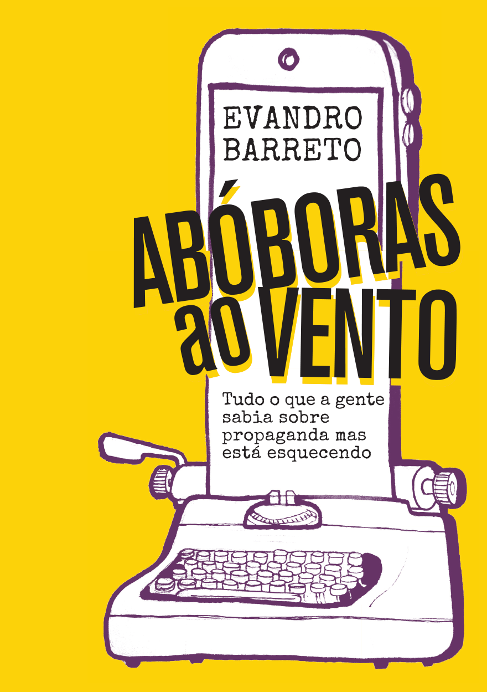
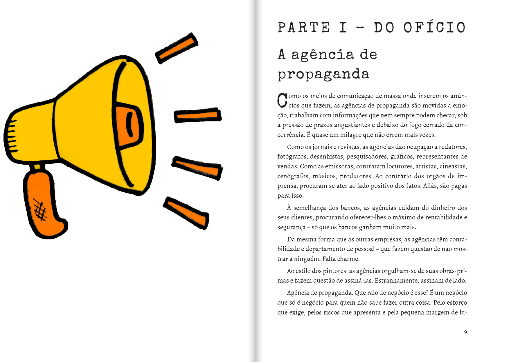
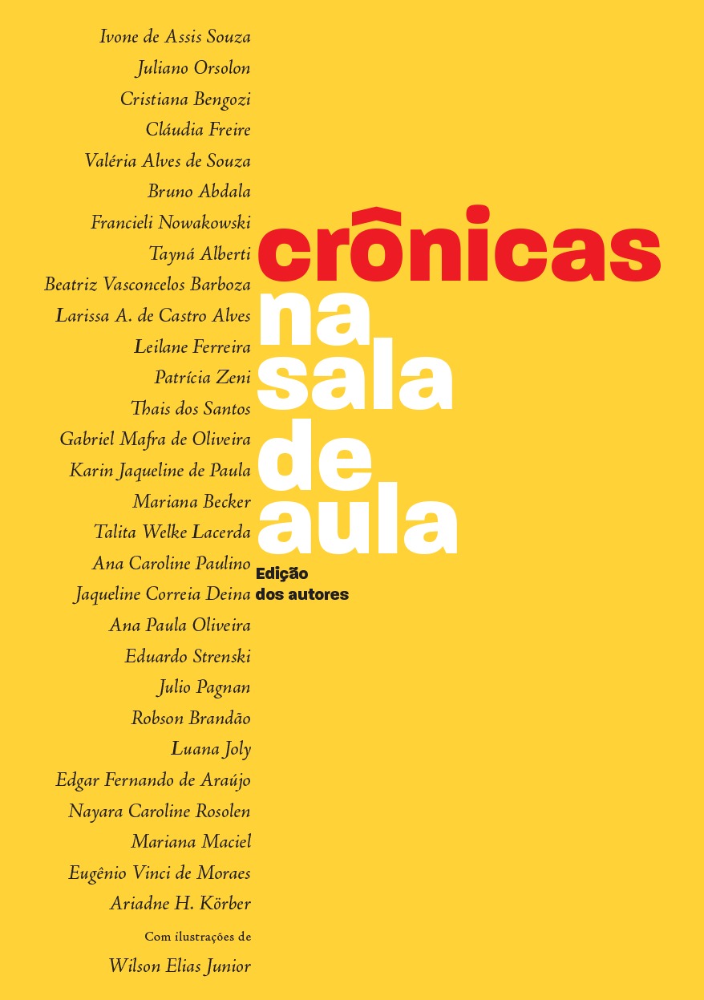
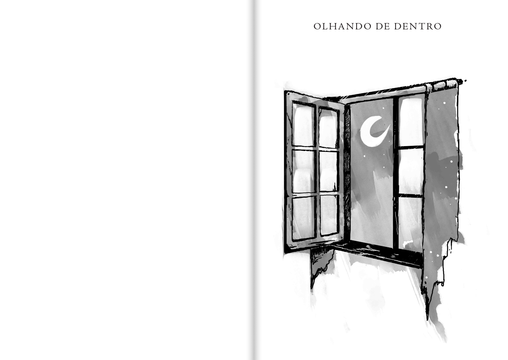
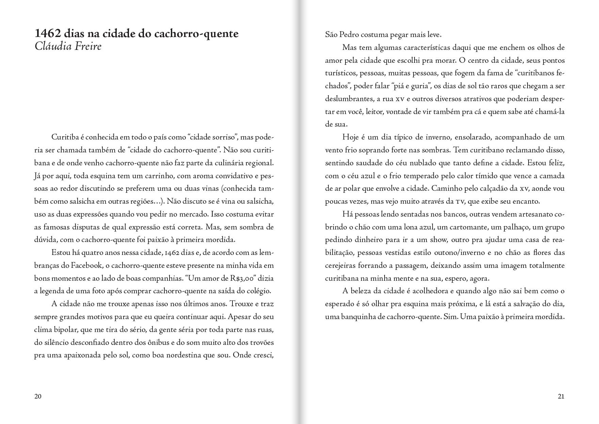
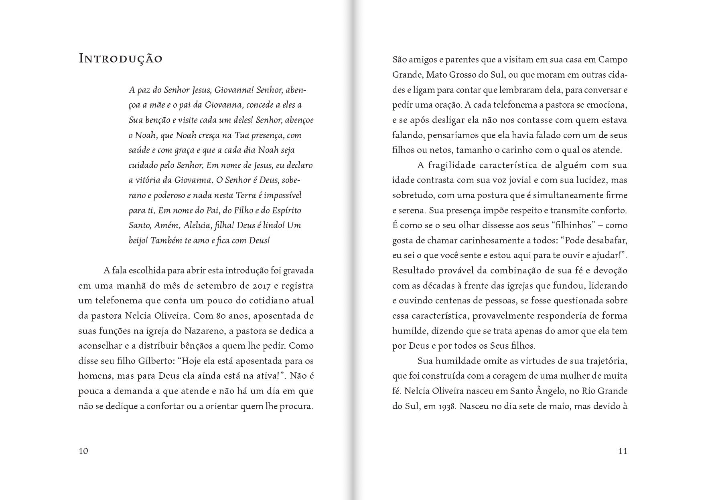

Livros (produzidos)
Abóboras ao vento
Depois de No blog do Dodô, emendei mais um projeto com o Evandro Barreto. Foi a reedição do seu livro Abóboras ao vento: tudo o que a gente sabia sobre propaganda mas está esquecendo. Terminado o contrato com a Editora Globo, era possível relançar o livro. Foi lançado para ser impresso on demand, e também em formato eletrônico. Fiz a capa, as ilustrações, e as páginas. A trajetória de Evandro como redator aparece na máquina de escrever da capa e também nos títulos do livro.


Crônicas na sala de aula
O professor Eugênio Vinci de Moraes – atual colega e sempre meu professor – queria fazer algo especial com as crônicas produzidas pelos alunos do curso de jornalismo. Dei a ideia de produzir um livro para ser impresso sob demanda, para não arcar com custos elevados de impressão.

Cada seção conta com uma abertura com ilustrações de Wilson Elias Junir, ilustrador e então estudante de publicidade.

Para o miolo, escolhi a família tipográfica Jenson, que tem características bem peculiares. O título e a autoria ficaram valorizados nem tanto pelo tamanho das letras, mas pelo branco que os emoldura. A capa ficou com um ar retrô, em parte graças à fonte Paralucent.

Testemunhos
O livro, uma homenagem a uma mulher importante na sua comunidade, apresenta vários testemunhos sobre ela. Foi meu trabalho tipográfico mais refinado até agora, com páginas de texto bem composto, quase sem hífens.
